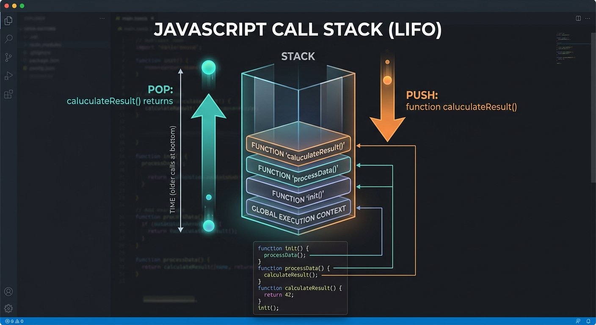
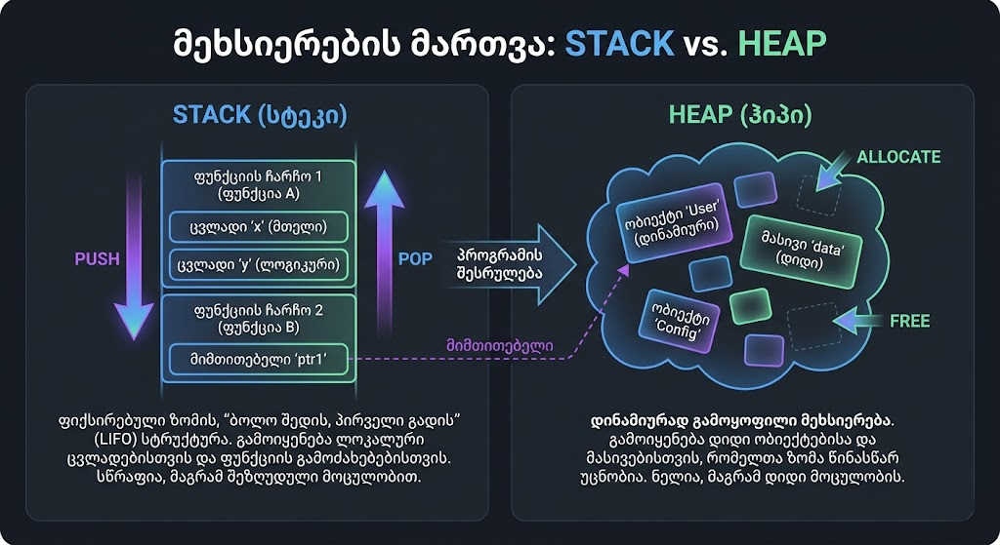
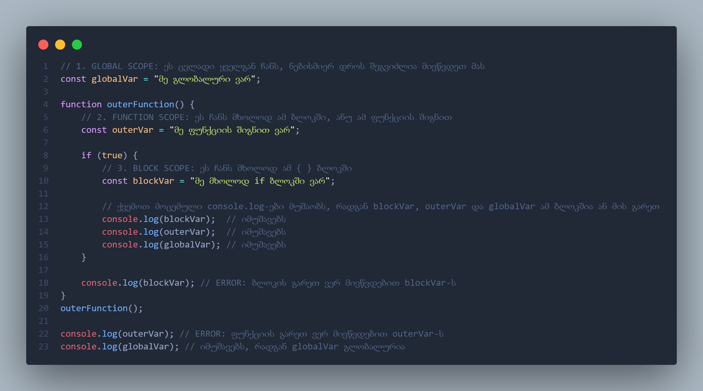

JavaScript მეხსიერების მართვა
როგორ ინახება და მუშავდება თქვენი JavaScript კოდი კომპიუტერის
RAM-ში?
1. The Stack (სტეკი)
სტეკი არის მეხსიერების სეგმენტი, სადაც JS ინახავს პრიმიტიულ
მონაცემებს და ფუნქციების გამოძახების რიგს.
მთავარი თვისებები:
- ინახავს: Number, String, Boolean, Null, Undefined.
- მუშაობს პრინციპით: Last In, First Out (ბოლო შემოვიდა -
პირველი გავიდა).
- არის ძალიან სწრაფი, რადგან ზომა წინასწარ ცნობილია.

2. The Heap (ჰიპი)
ჰიპი არის მეხსიერების დიდი და დინამიური ნაწილი კომპიუტერის
მეხსიერებაში, სადაც ინახება რთული ტიპის მონაცემები (ობიექტები,
მასივები).
რატომ არის საჭირო:
- ობიექტების და მასივების ზომა შეიძლება შეიცვალოს
მუშაობისას.
- სტეკში ინახება მხოლოდ "Reference" (მისამართი), რომელიც
მიუთითებს ობიექტზე ჰიპში.
- მართავს Garbage Collector (ავტომატური მეხსიერების
გამწმენდი).

3. Scope (ხედვის არე)
სკოუპი განსაზღვრავს ცვლადების ხილვადობას კოდის სხვადასხვა
ნაწილში.
დონეები:
- Global: ხელმისაწვდომია ყველგან.
- Function: ხელმისაწვდომია მხოლოდ ფუნქციის შიგნით.
- Block: let და const-ით შექმნილი ცვლადები ჩანს მხოლოდ { }
ბლოკში.
